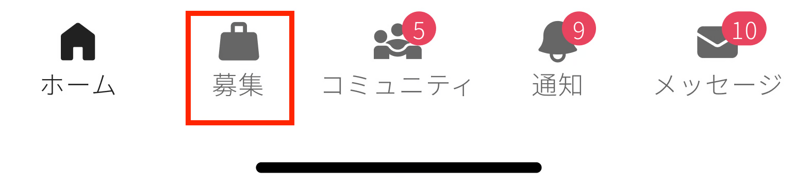

副業・転職など募集情報を探したい¶
公開されている募集は「募集」タブからまとめて確認することができます。


- アプリ：下部メニューの「募集」タブ
- Web：左上の「募集」メニュー
表示される募集について¶
募集は全てのユーザーに公開され、アプリとWebの両方から確認できます。

募集の検索について¶
以下5つの項目で検索や絞り込みが可能です。（※2023年2月時点では、同一項目では条件の複数選択ができません。）
- キーワード
- 職種
- 募集カテゴリ（カジュアル面談 or メンバー募集）
- 働き方/関わり方
- おすすめのハッシュタグ